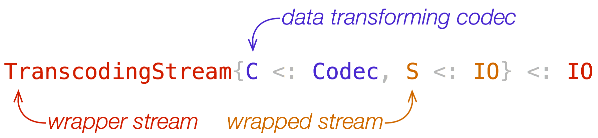

Home

Overview
TranscodingStreams.jl is a package for transcoding data streams. Transcoding may be compression, decompression, ASCII encoding, and any other codec. The package exports a data type TranscodingStream, which is a subtype of IO and wraps other IO object to transcode data read from or written to the wrapped stream.
In this page, we introduce the basic concepts of TranscodingStreams.jl and currently available packages. The Examples page demonstrates common usage. The Reference page offers a comprehensive API document.
Introduction
TranscodingStream has two type parameters, C<:Codec and S<:IO, and hence the concrete data type is written as TranscodingStream{C<:Codec,S<:IO}. This type wraps an underlying I/O stream S by a transcoding codec C. C and S are orthogonal and hence you can use any combination of these two types. The underlying stream may be any stream that supports I/O operations defined by the Base module. For example, it may be IOStream, TTY, IOBuffer, or TranscodingStream. The codec C must define the transcoding protocol defined in this package. We already have various codecs in packages listed below. Of course, you can define your own codec by implementing the transcoding protocol described in TranscodingStreams.Codec.
You can install codec packages using the standard package manager. These codec packages are independent of each other and can be installed separately. You won't need to explicitly install the TranscodingStreams.jl package unless you will use lower-level interfaces of it. Each codec package defines some codec types, which is a subtype of TranscodingStreams.Codec, and their corresponding transcoding stream aliases. These aliases are partially instantiated by a codec type; for example, GzipDecompressionStream{S} is an alias of TranscodingStream{GzipDecompressor,S}, where S is a subtype of IO.
| Package | Library | Format | Codec | Stream alias | Description |
|---|---|---|---|---|---|
| CodecZlib.jl | zlib | RFC1952 | GzipCompressor |
GzipCompressorStream |
Compress data in gzip (.gz) format. |
GzipDecompressor |
GzipDecompressorStream |
Decompress data in gzip (.gz) format. | |||
| RFC1950 | ZlibCompressor |
ZlibCompressorStream |
Compress data in zlib format. | ||
ZlibDecompressor |
ZlibDecompressorStream |
Decompress data in zlib format. | |||
| RFC1951 | DeflateCompressor |
DeflateCompressorStream |
Compress data in deflate format. | ||
DeflateDecompressor |
DeflateDecompressorStream |
Decompress data in deflate format. | |||
| CodecXz.jl | xz | The .xz File Format | XzCompressor |
XzCompressorStream |
Compress data in xz (.xz) format. |
XzDecompressor |
XzDecompressorStream |
Decompress data in xz (.xz) format. | |||
| CodecZstd.jl | zstd | Zstandard Compression Format | ZstdCompressor |
ZstdCompressorStream |
Compress data in zstd (.zst) format. |
ZstdDecompressor |
ZstdDecompressorStream |
Decompress data in zstd (.zst) format. | |||
| CodecBase.jl | native | RFC4648 | Base16Encoder |
Base16EncoderStream |
Encode binary in base16 format. |
Base16Decoder |
Base16DecoderStream |
Decode binary in base16 format. | |||
Base32Encoder |
Base32EncoderStream |
Encode binary in base32 format. | |||
Base32Decoder |
Base32DecoderStream |
Decode binary in base32 format. | |||
Base64Encoder |
Base64EncoderStream |
Encode binary in base64 format. | |||
Base64Decoder |
Base64DecoderStream |
Decode binary in base64 format. | |||
| CodecBzip2.jl | bzip2 | Bzip2Compressor |
Bzip2CompressorStream |
Compress data in bzip2 (.bz2) format. | |
Bzip2Decompressor |
Bzip2DecompressorStream |
Decompress data in bzip2 (.bz2) format. |
Notes
Wrapped streams
The wrapper stream takes care of the wrapped stream. Reading or writing data from or to the wrapped stream outside the management will result in unexpected behaviors. When you close the wrapped stream, you must call the close method of the wrapper stream, which releases allocated resources and closes the wrapped stream.
Error handling
You may encounter an error while processing data with this package. For example, your compressed data may be corrupted or truncated for some reason, and the decompressor cannot recover the original data. In such a case, the codec informs the stream of the error, and the stream goes to an unrecoverable mode. In this mode, the only possible operations are isopen and close. Other operations, such as read or write, will result in an argument error exception. Resources allocated by the codec will be released by the stream, and hence you must not call the finalizer of the codec.